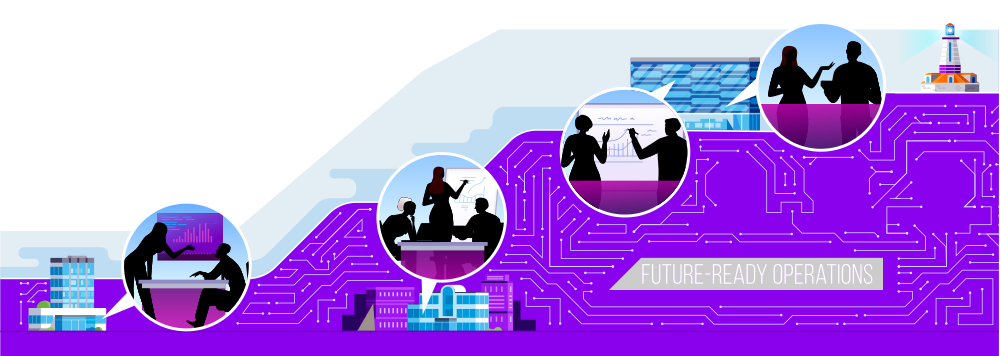

Fast-track to Intelligent Operations
To unlock new sources of value across your business, unleash the optimal combination of people, technology and data to solve problems and pursue opportunities at speed and scale.



To unlock new sources of value across your business, unleash the optimal combination of people, technology and data to solve problems and pursue opportunities at speed and scale.